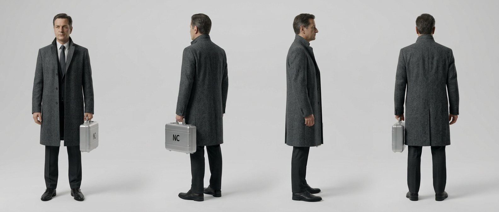
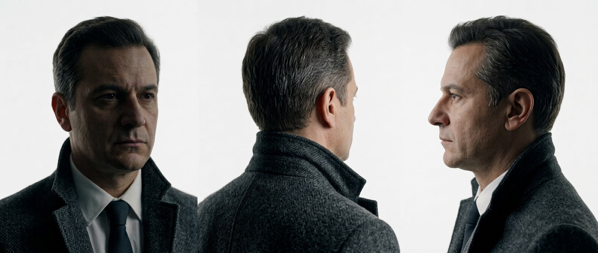
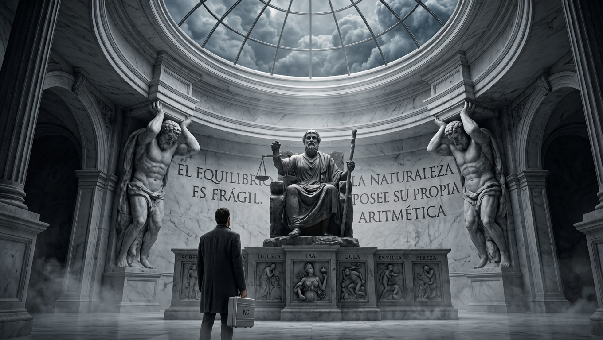
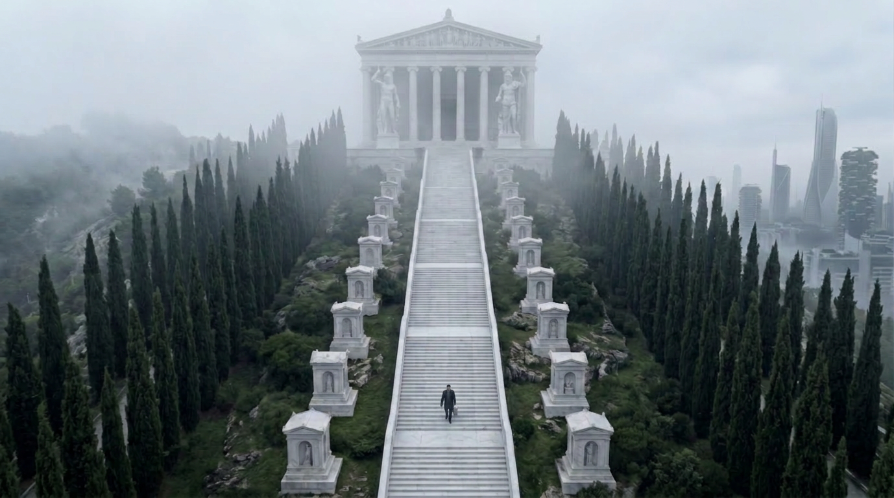
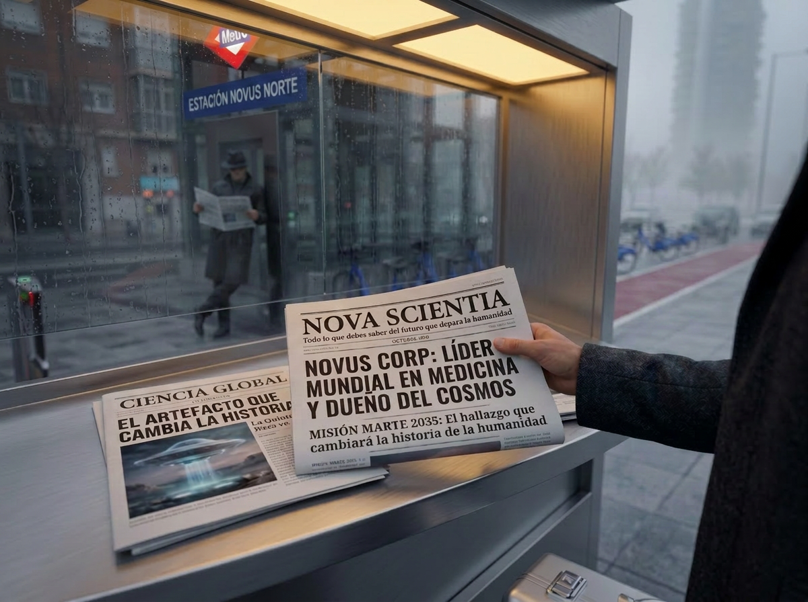

Novus Corp · Depto Arte · Confidencial
NC-PROTAC / 04 · El Resurgir
El Ejecutivo NC
Nunca frontal nítido. Espalda, perfil, sombra o reflejo.

EJECUTIVO_01_TURNAROUND.jpg Turnaround · abrigo Charcoal Grey · maletín NC · 0° / 45° / 90° / 180°
{kind=link}

EJECUTIVO_02_ROSTROS.jpg Tres cuartos / nuca / perfil · referencia de ficha, no plano de escena
{kind=link}
EJECUTIVO_03_DETALLES.jpg Maletín NC · lana Charcoal · NOVA SCIENTIA / CIENCIA GLOBAL · mano
{kind=link}

EJECUTIVO_04_SECUENCIA_1.png Prólogo 1/6 · Templo del Equilibrio · de espaldas · maletín
{kind=link}
EJECUTIVO_05_SECUENCIA_2.png Prólogo 2/6 · El Umbral · de espaldas
{kind=link}

EJECUTIVO_06_SECUENCIA_3.png Prólogo 3/6 · Escalinata · descenso
{kind=link}
EJECUTIVO_07_SECUENCIA_4.png Prólogo 4/6 · Estación Novus Norte · de espaldas
{kind=link}

EJECUTIVO_08_SECUENCIA_5.png Prólogo 5/6 · Periódico NOVA SCIENTIA · reflejo del Mercenario
{kind=link}

EJECUTIVO_09_SECUENCIA_6.png Prólogo 6/6 · Maletín sobre quiosco · consulta del teléfono · perfil
Matriz técnica
Identidad
Alias
El Ejecutivo NC
Función
Catalizador; porta el secreto. Pertenece al sistema.
Edad
42–45 años
Altura
182 cm
Look bloqueado
Abrigo
Lana texturizada Charcoal Grey #36454F
Traje
Oscuro, camisa blanca, corbata oscura
Prop
Un solo maletín Chrome Silver #C0C0C0, logo NC negro #0B0B0B
Regla facial
Nunca frontal completamente nítido en escena
Bloqueos (leyes)
- Nunca frontal nítido en escena: espalda, perfil, tres cuartos bajo sombra o reflejo parcial.
- Los rasgos parciales siguen siendo humanos y legibles: nunca máscara, vacío negro ni rostro sin facciones.
- Maletín en mano derecha al caminar; nunca duplicarlo.
- Un único logo NC.
- El turnaround frontal es ficha de referencia, no plano de rodaje.
Paleta bloqueada
#36454F
Charcoal Grey — abrigo
Charcoal Grey — abrigo
#C0C0C0
Chrome Silver — maletín
Chrome Silver — maletín
#0B0B0B
NC — logo
NC — logo
#E5E4E2
Platinum
Platinum
Lock de personaje · pegar en prompt
A 42–45 year-old corporate executive, 182cm, seen from back, profile or three-quarter under shadow — never a fully sharp frontal face. Long textured wool coat Charcoal Grey #36454F, dark suit, white shirt, dark tie. One polished Chrome Silver #C0C0C0 metal briefcase with a single black NC logo #0B0B0B. Photoreal live-action, grounded futurism.
Negative: full frontal face, mask, empty black void, two briefcases, CGI.